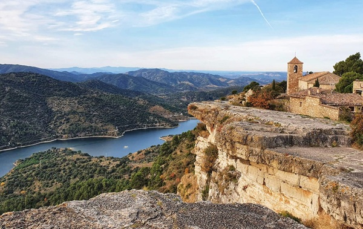

Los pueblos más bonitos
Los pueblos más bonitos

Además de ser considerado uno de los pueblos más bonitos de Cataluña, Siurana fue candidata a ser Patrimonio Mundial de la Unesco. Reposa sobre un acantilado que queda sobre el pantano del mismo nombre.
Desde Siurana poemos disfrutar de unas grandioss vistas panorámicas de las Montañas de la Costa Dorada.
Cuenta la leyenda que la reina mora Abdelizia se suicidó durante la reconquista de este pueblo tarraconense. Al ver peligrar la legitimidad y el poder de su califato, Abdelaiza montó a su caballo y se tiró por el acantilado.
Siurana es un pueblo amurallado por lo cual no se puede circular por su interior. Un kilómetro antes de llegar al pueblo hay habilitada una zona de aparcamiento para conocerlo caminando.